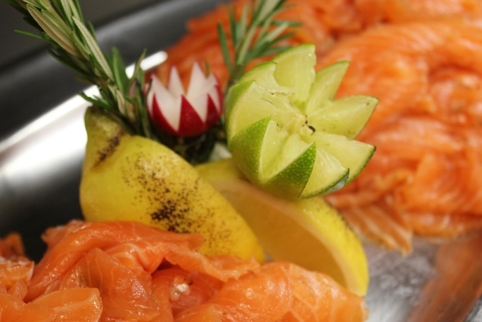
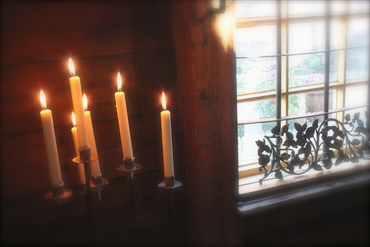

RAVINTOLAT JA KAHVILAT:
- avoimet ovet la 12-15
MERISOTAKOULUN SOTILASKOTI
- la-su 11-18
Viaporin Deli & Cafe
- la 12-22, su 11.30-14.30 ja 15.00-18.00 (Äitienpäiväkattaukset)
Ravintola Suomenlinnan Panimo
- la 11-24, su 12-18
Bistro Bastion
- la 10.30-17, su 12-17
Cafe Vanille
- la-su 11-17
Cafe Samovarbar
- la 11- , su suljettu
Cafe Jääkellari
- la-su 10-18
Suomenlinnakeskuksen kahvila
- la 11- , su 12- 17
Cafe Restaurant Chapman
- la 11-22, su 11-18
Cafe Bar Valimo
- la-su 10,30-16.30
Kahvila Piper
- la 16-24, su 12-17
Ravintola Walhalla Gourmet
- la 12- 17
Ravintola Walhalla Pizzeria Nikolai
kts. menut ja lisätiedot kahviloiden / ravintoloiden omilta kotisivuilta tai Suomenlinnan omilta sivuilta ravintolat ja kahvilat